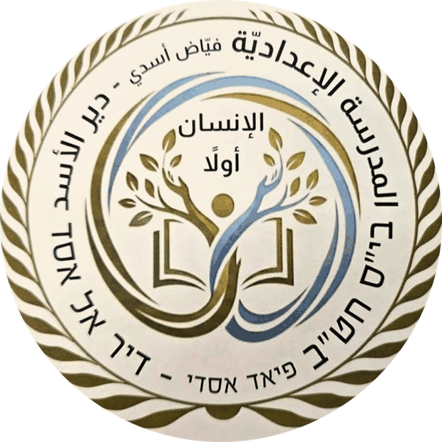
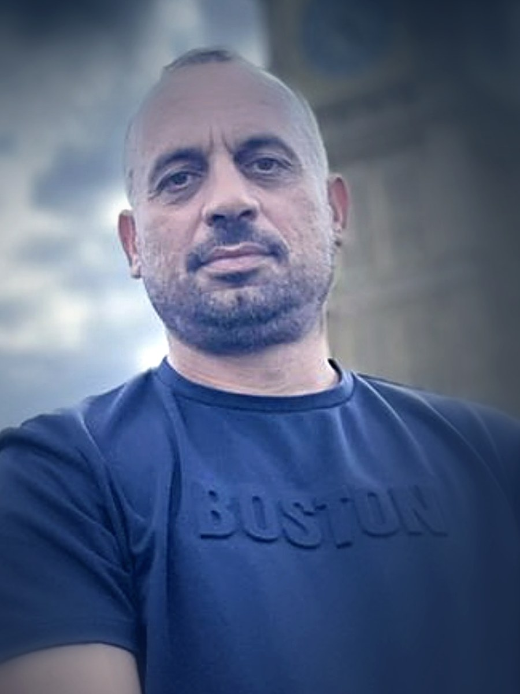

مُركِّز الحوسبة والتعلُّم الرقميّ
حوسبةٌ تبني الطالب ولا تستبدله: الإنسان قبل الآلة، والسؤال قبل الإجابة، والمعنى قبل الأداة.

نُدرّب الطالب على تفكيك المشكلة وبناء الخوارزميّة خطوةً خطوة؛ فاللغات تتبدّل كلّ بضع سنوات، والتفكير يبقى.
كلّ فصلٍ دراسيٍّ يُختَم بمُنتَجٍ رقميٍّ يحمل اسم صاحبه: موقعٌ، أو تطبيقٌ، أو روبوتٌ يعمل.
نستعمله شريكًا في التعلّم لا بديلًا عنه، ونُعلّم الطالب أن يسأل ويتحقّق بدل أن ينسخ.
مرافقةٌ يوميّة للطاقم التدريسيّ حتّى تصير التكنولوجيا يدًا ممدودة، لا عبئًا إضافيًّا على المعلّم.
سدُّ الفجوة الرقميّة بالأجهزة والاتّصال والمرافقة الشخصيّة، فالفرصة الرقميّة حقٌّ لا امتياز.
خصوصيّةٌ محميّة، ومواجهةٌ صريحة للتنمّر الإلكترونيّ، واحترامٌ للإنسان الذي خلف الشاشة.
طلّابٌ يُعلّمون طلّابًا، ويحملون ما تعلّموه من الصفّ إلى البيت وإلى أبناء الحيّ.
ورشاتٌ لأولياء الأمور، ومشاريع رقميّة يصنعها الطلّاب لخدمة أهالي دير الأسد.
من الخوارزميّ إلى الخوارزميّة: نُعلّم أبناءنا أن يكتبوا الشيفرة، ونُعلّمهم أوّلًا لماذا يكتبونها.
نصّ الرؤية مكتوبٌ كمسوّدة جاهزة للتعديل — بدّل أيّ بندٍ بكلماتك. اللوحة مُعدّة للطباعة على مقاس A3 عموديّ.